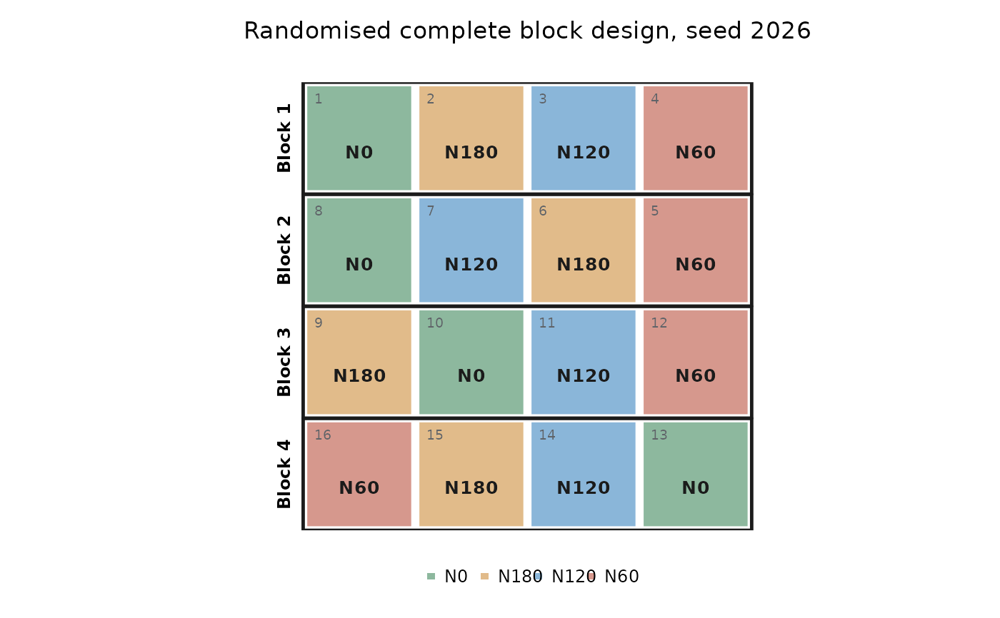

Generates the randomised layout of a classical design, numbers the plots
and returns the field book (one row per plot) with the skeleton analysis
of variance. The randomisation is reproducible with seed and does not
change the random state of the session.
Usage
make_design(
design = names(.generated),
trt = NULL,
r = 3,
A = NULL,
B = NULL,
C = NULL,
k = NULL,
checks = NULL,
entries = NULL,
greek = NULL,
seed = NULL,
serpentine = TRUE,
numbering = c("sequential", "block"),
arrangement = c("stacked", "side"),
blocks_per_row = 2,
plots_per_row = NULL,
gap = FALSE
)Arguments
- design
Design identifier: one of
"crd","rcbd","latin","fact_crd","fact_rcbd","split_rcbd","strip","splitsplit","ibd","augmented","graeco","youden","bib","cyclic","alpha"or"lattice"(see Details anddesigns("layout")).- trt
Treatment names, or a single number of treatments (named T1, T2...).
- r
Number of replicates (blocks).
- A, B, C
Levels of the factors of factorial and split designs.
- k
Block size of incomplete block designs.
- checks, entries
Checks and new entries of an augmented design.
- greek
Levels of the second blocking factor of a Graeco-Latin square.
- seed
Seed of the randomisation;
NULLdraws one and reports it.- serpentine
Number the plots in serpentine order (back and forth along the field rows).
- numbering
"sequential"(1, 2, 3...) or"block"(101, 102... in block 1, 201... in block 2).- arrangement
Blocks
"stacked"one below the other or"side"by side.- blocks_per_row
Blocks per row of the field with
arrangement = "side".- plots_per_row
Plots per row within a block (CRD, RCBD, factorials, augmented); by default a whole block in one row.
- gap
Leave an empty row or column between blocks.
Value
An object of class "ad_layout" with the field book (book),
the outlines of blocks and main plots (boxes), the skeleton ANOVA
(skeleton) and the seed used.
Details
The table of the designs, with the arguments each one needs and the
design of design_anova() that analyses its field book, is in
designs(); designs("layout") returns it as a data frame. Printing
the layout shows the call that analyses it (also in $analysis).
Designs: "crd", "rcbd", "latin" (as many rows and columns as
treatments), "fact_crd" and "fact_rcbd" (all combinations of A,
B and optionally C), "split_rcbd" (A on main plots, B on
sub-plots), "strip" (A in horizontal and B in vertical strips),
"splitsplit" (A, B, C), "ibd" (each replicate split at random
into blocks of k plots; the number of treatments must be a multiple of
k) and "augmented" (checks in every block and each of the
entries once).
Further designs: "graeco" (Graeco-Latin square: rows, columns, a
second blocking factor greek and the treatments, for an odd number of
treatments or 4 or 8), "youden" (incomplete Latin square: k rows and
as many columns as treatments, from a cyclic difference set), "bib"
(balanced incomplete blocks of size k: cyclic when a difference set is
known, otherwise all combinations), "cyclic" (incomplete blocks
developed from initial blocks chosen for the highest efficiency; r a
multiple of k), "alpha" (alpha design: resolvable, t / k blocks of
size k per replicate, k <= t / k, with the alpha array of highest
efficiency found)
and "lattice" (square lattice: k^2 treatments in blocks of k).
design_efficiency() reports the efficiency factor of the layout.
See also
designs() for the table of designs, field_book(),
design_efficiency(), power_design().
Examples
designs("layout") # the designs that can be randomised
#> id
#> 1 crd
#> 2 rcbd
#> 3 latin
#> 4 fact_crd
#> 5 fact_rcbd
#> 6 split_rcbd
#> 7 strip
#> 8 splitsplit
#> 9 ibd
#> 10 augmented
#> 11 graeco
#> 12 youden
#> 13 bib
#> 14 cyclic
#> 15 alpha
#> 16 lattice
#> name
#> 1 Completely randomised design (CRD)
#> 2 Randomised complete block design (RCBD)
#> 3 Latin square
#> 4 Factorial in CRD
#> 5 Factorial in RCBD
#> 6 Split-plot in RCBD
#> 7 Strip-plot (split-block) in RCBD
#> 8 Split-split-plot in RCBD
#> 9 Resolvable incomplete blocks (random blocks of size k within replicates)
#> 10 Augmented design (checks in every block + unreplicated entries)
#> 11 Graeco-Latin square
#> 12 Youden square
#> 13 Balanced incomplete block design (BIBD)
#> 14 Cyclic incomplete block design
#> 15 Alpha design (resolvable incomplete blocks)
#> 16 Square lattice
#> needs
#> 1 trt, r
#> 2 trt, r
#> 3 trt
#> 4 A, B (C), r
#> 5 A, B (C), r
#> 6 A, B, r
#> 7 A, B, r
#> 8 A, B, C, r
#> 9 trt, k, r
#> 10 checks, entries, r
#> 11 trt (greek)
#> 12 trt, k
#> 13 trt, k
#> 14 trt, k, r
#> 15 trt, k, r
#> 16 trt, k, r
#> conditions
#> 1
#> 2
#> 3 rows = columns = number of treatments
#> 4 all combinations of the levels
#> 5 all combinations of the levels in every block
#> 6 A on main plots, B on sub-plots
#> 7 A in horizontal strips, B in vertical strips
#> 8 A on main plots, B on sub-plots, C on sub-sub-plots
#> 9 treatments a multiple of k; each replicate split at random into blocks of k
#> 10 checks in every block, each entry once
#> 11 odd number of treatments, or 4 or 8
#> 12 k rows, as many columns as treatments
#> 13 every pair of treatments together equally often
#> 14 r a multiple of k
#> 15 treatments a multiple of k and k <= treatments / k
#> 16 treatments = k^2
#> analyse_as
#> 1 crd
#> 2 rcbd
#> 3 latin
#> 4 fact_crd
#> 5 fact_rcbd
#> 6 split_rcbd
#> 7 strip_rcbd
#> 8 splitsplit_rcbd
#> 9 ibd
#> 10 augmented
#> 11 graeco
#> 12 youden
#> 13 bib
#> 14 bib
#> 15 ibd
#> 16 ibd
lay <- make_design("rcbd", trt = c("N0", "N60", "N120", "N180"), r = 4, seed = 2026)
lay
#>
#> Randomised complete block design (RCBD)
#> 16 plots in 4 field rows x 4 columns; 4 treatments; replicates 4; seed 2026
#>
#> Skeleton ANOVA
#> source df
#> Blocks 3
#> Treatments 3
#> Error 9
#> Total 15
#> Note: fewer than 10 error degrees of freedom; consider more replicates.
#>
#> Field book (first rows):
#> Plot Block FieldRow FieldCol Treatment
#> 1 1 1 1 N0
#> 2 1 1 2 N180
#> 3 1 1 3 N120
#> 4 1 1 4 N60
#> 5 2 2 4 N60
#> 6 2 2 3 N180
#> 7 2 2 2 N120
#> 8 2 2 1 N0
#>
#> Analysis, once the responses are in the field book:
#> design_anova(data, "response", "Treatment", block = "Block", design = "rcbd")
head(lay$book)
#> Plot Block FieldRow FieldCol Treatment
#> 1 1 1 1 1 N0
#> 2 2 1 1 2 N180
#> 3 3 1 1 3 N120
#> 4 4 1 1 4 N60
#> 5 5 2 2 4 N60
#> 6 6 2 2 3 N180
plot(lay)

make_design("split_rcbd", A = c("Drip", "Furrow"), B = paste0("V", 1:4), r = 3, seed = 1)
#>
#> Split-plot in RCBD
#> 24 plots in 12 field rows x 2 columns; 8 treatments; replicates 3; seed 1
#>
#> Skeleton ANOVA
#> source df
#> Blocks 2
#> A (main plot) 1
#> Error a 2
#> B (sub-plot) 3
#> A x B 3
#> Error b 12
#> Total 23
#> Note: fewer than 10 error degrees of freedom; consider more replicates.
#>
#> Field book (first rows):
#> Plot Block FieldRow FieldCol A B Treatment
#> 1 1 1 1 Drip V3 Drip x V3
#> 2 1 1 2 Furrow V3 Furrow x V3
#> 3 1 2 2 Furrow V4 Furrow x V4
#> 4 1 2 1 Drip V1 Drip x V1
#> 5 1 3 1 Drip V2 Drip x V2
#> 6 1 3 2 Furrow V2 Furrow x V2
#> 7 1 4 2 Furrow V1 Furrow x V1
#> 8 1 4 1 Drip V4 Drip x V4
#>
#> Analysis, once the responses are in the field book:
#> design_anova(data, "response", c("A", "B"), block = "Block", design = "split_rcbd")